金曜日の便り。NeuralinkのBlindside（ブラインドサイト）が2026年、視覚野に電極アレイを直接埋め込む初の人体試験を開始する ── FDAのブレークスルー医療機器指定を受けた「完全失明への人工光視」実験が、脳とデジタルの境界を新たな次元で問い直す。同じ週、エボラDRCは6/17時点で866確定例・200死者という重い数字を更新し、ウガンダは14日間連続ゼロで終息の節目に近づいた。量子スピン液体の中に「創発光子」が初めて分光で証明され、高用量ヌシネルセンのFDA承認でSMAの治療選択肢がまた広がった。脳のデジタルツイン研究では720人・1,000時間超のfMRIからAIが個人の脳反応を学習し始めている。問いながら世界は前進する、金曜日。
NeuralinkのBlindside（ブラインドサイト）は、N1チップとは異なる第二の製品ラインとして視覚野（第一次視覚野・V1）に電極アレイを直接埋め込み、網膜や視神経が完全に機能しない患者に人工的な光点群（フォスフェン）を知覚させることを目指すブレークスルー医療機器だ。FDAのブレークスルー医療機器指定を受けており、2026年内に最初の人体試験が開始される計画が発表されている。網膜色素変性症・事故による視神経完全損傷など、従来の人工網膜アプローチが機能しない患者であっても、視覚野が残存していれば人工的な視覚入力を提供できる可能性がある。電極アレイが刺激する視覚野ニューロンは脳内でフォスフェン（光の閃き）として知覚され、将来は文字・物体の輪郭・空間情報の伝達も目標とされる。すでに21名のN1チップ移植で「動けない体への自由」を実現してきたNeuralinkが、次に「見えない世界への光」に踏み込む ── これは人類史上初めて、視覚野に直接デジタルの光を届けようとする試みだ。
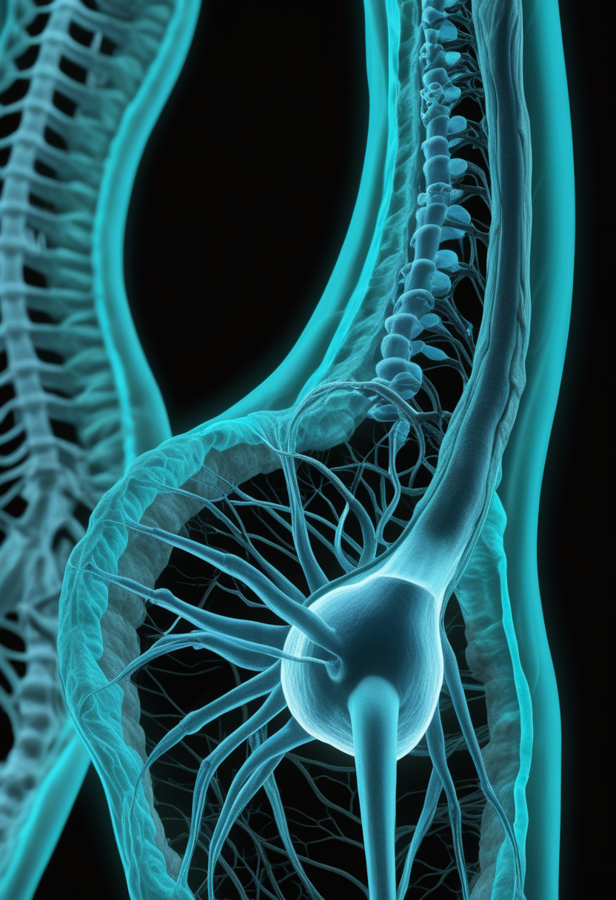
2026年3月30日、FDAはBiogenの高用量ヌシネルセン（スピンラザ）を承認した。標準用量12mgに代わる50mg×2回の「ローディング投与」とその後28mgを4ヶ月ごとに維持するレジメンで、脊髄への薬剤到達量を高め、標準投与では恩恵が限定的だった患者群への効果改善を目的とする。1〜3型SMA患者を対象とした第3相DEVOTE試験で神経機能の改善が示された。脊髄性筋萎縮症（SMA）の三大承認薬の一つであるヌシネルセンが「高用量」という新たな選択肢を持つことで、年長患者や標準用量での反応が乏しかった患者に再び道が開いた。アピテグロマブのFDA審査（9月30日）と高用量Spinraza承認が重なる2026年春夏は、SMA治療の転換点として記録される。
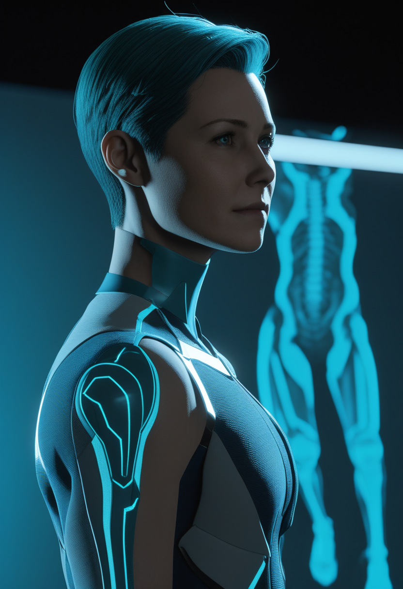
Scholar Rockは筋ジストロフィー協会（MDA）2026年学会においてアピテグロマブの第3相PIVOTALトライアルの解析データを発表した。早期治療を開始したコホートで最大の運動機能改善が観察され、SMN補充療法と筋肉標的療法を組み合わせた早期介入アプローチの有望性が裏付けられた。「早く治療するほど効果が大きい」というSMAの基本原則が筋肉標的療法においても確認されたことになる。競合であったエムグロバルト（GYM329）がMANATEE試験で有効性を示せず撤退した後、アピテグロマブは筋肉標的療法の唯一の候補として、FDA審査日9月30日を待っている。
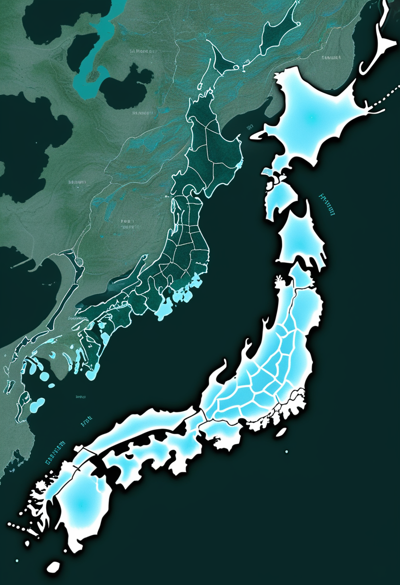
日本政府は2026年、SMA新生児スクリーニング（NBS）全国化に向けた補足予算申請を行い、制度整備の議論が加速している。現在38都道府県で任意NBSが実施されているが、対象となる新生児は全体の約20%にとどまる。スクリーニングによる発症前診断が確立されれば、ヌシネルセン・リスジプラム・ゾルゲンスマの早期投与で神経保護率が劇的に高まることは確立されている。高用量Spinraza承認（3月）とアピテグロマブFDA審査（9月）という治療選択肢拡充の波が、「スクリーニングで早く見つけて早く治療する」という政策の後押しとなっている。MDA Japan・Cure SMAは全数スクリーニングへの加速を訴えており、2026年が制度化の転換点となる可能性がある。
高用量ヌシネルセン承認が治療選択肢を広げ、アピテグロマブの早期治療データが9月FDA審査への期待を積み上げ、日本の新生児スクリーニング全国化が補足予算申請で動き出した ── 今週もSMAの「早く・広く・深く」は前進している。
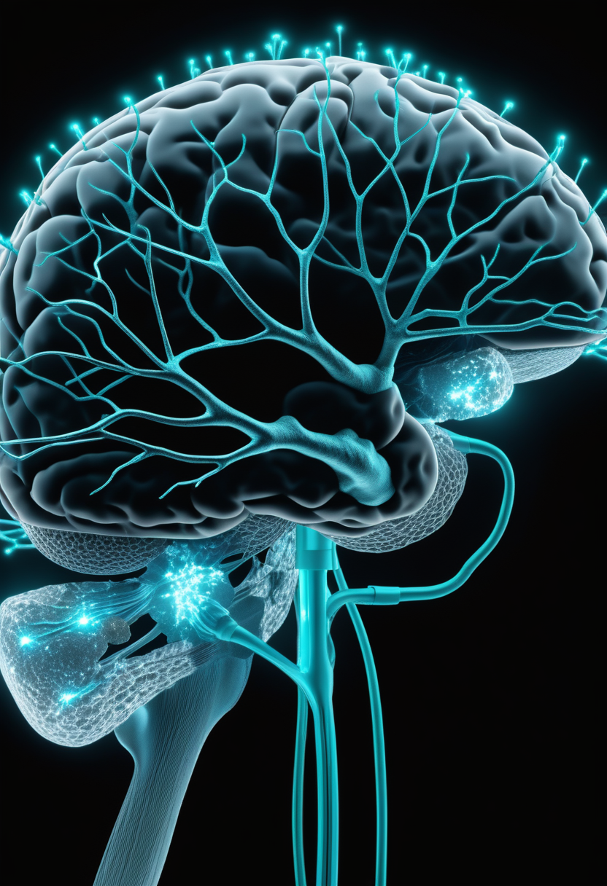
NeuralinkのBlindside（ブラインドサイト）は視覚野（V1）に電極アレイを直接埋め込み、網膜・視神経が完全に機能しない患者に人工的な光点（フォスフェン）を知覚させる第二製品ラインだ。FDAのブレークスルー医療機器指定を受けており、2026年内に最初の人体試験を実施する計画が公表されている。N1チップ（運動・感覚野）とは異なり、視覚入力を直接脳に届けることで「網膜が機能しなくても光を感じられる未来」を目指す。電極アレイの活性化パターンを変えることで文字・物体輪郭・空間情報を伝えることが長期目標とされており、完全失明患者の生活の質を根本から変えうる技術として期待される。BCIは「動けない体に動く自由を」から「見えない世界に光を」へと、その領域を拡張し続けている。
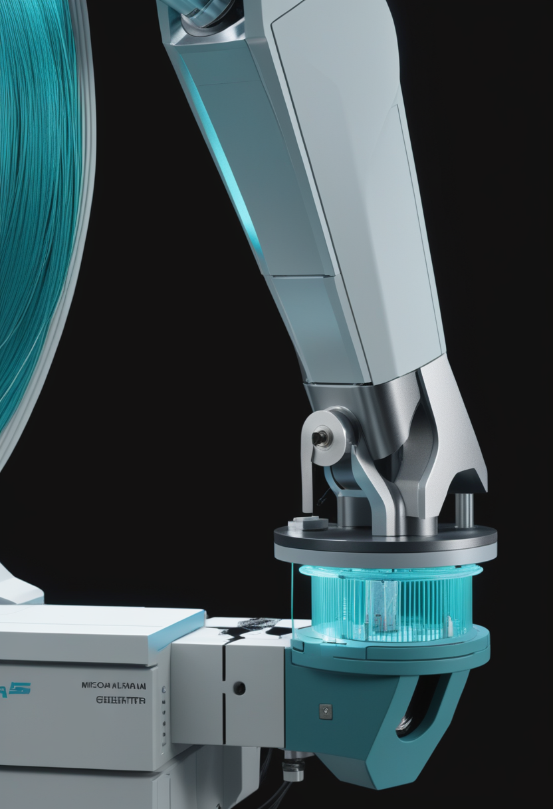
Neuralinkが進める2026年の大量生産・自動手術化移行において特に注目されるのは「スレッドが硬膜を貫通可能になる」設計変更だ。これにより開頭手術で大きく開いていた硬膜（脳を包む強靭な膜）を除去する必要がなくなり、手術リスクと回復期間が大幅に短縮される見込みだ。現在は外科医が手動で電極スレッドを挿入しているが、自動化ロボット手術システムへの移行により再現性と精度が高まる。N1チップ（運動野）とBlindsite（視覚野）の二製品を並行展開するNeuralinkにとって、手術工程の自動化はスケールアップの前提条件だ。累計21名の実績が証明した基礎の上で、医療機器産業の慣例を覆す速度での普及が始まろうとしている。
Tobii（スウェーデンの視線追跡大手）が標準ウェブカメラだけで動作する新しい視線追跡ソフトウェアツールを発表した。これまで赤外線照射の専用ハードウェアが必要だったTobiiの視線追跡技術が、AIベースの処理でウェブカメラ環境に拡張された形だ。ALSや脊髄損傷など運動機能を失った患者にとって、視線入力インターフェースが専用デバイスなしに標準コンピュータで利用できることはアクセシビリティの根本的な民主化を意味する。ETRA 2026（マラケシュ、6月1〜4日）で示されたAIウェブカム視線追跡の潮流と合流し、視線入力の普及フェーズが実質的に始まった。専用ハードウェアの壁がなくなることで、多くの人にとって視線が「もう一つの手」になり始める。
Blindsightが視覚野に光を届ける初人体試験を開始し、Neuralinkが手術の自動化で普及の扉を開き、Tobiiが専用ハードウェアなしの視線追跡を実現する ── BCIが「聴く・動く・見る・伝える」のすべてに同時に踏み込んでいる金曜日。
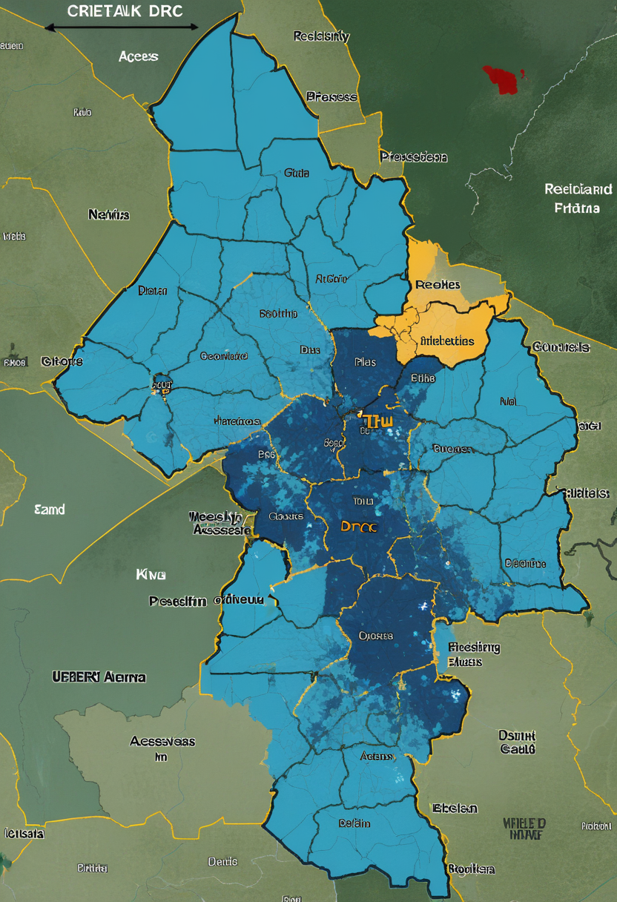
WHOおよびECDCの最新報告によれば2026年6月17日時点でDRCエボラウイルス病の累計確定例は866例・200死者に達した。先週の808例・192死者からわずか数日で58例・8死者が加算されており、週100例超の感染ペースに変わりはない。最大被害地のイトゥリ州（約800例）に加え、北キブ・南キブ州での拡大が続いており、ブンディブギョウイルス型向けの承認ワクチンがないことが根本的な制約となっている。Africa CDCと米国（2.2億ドル拠出）・EUらの国際支援が続くが、武装集団支配地域での接触追跡率50%以下が封じ込めの最大の壁として立ちはだかる。
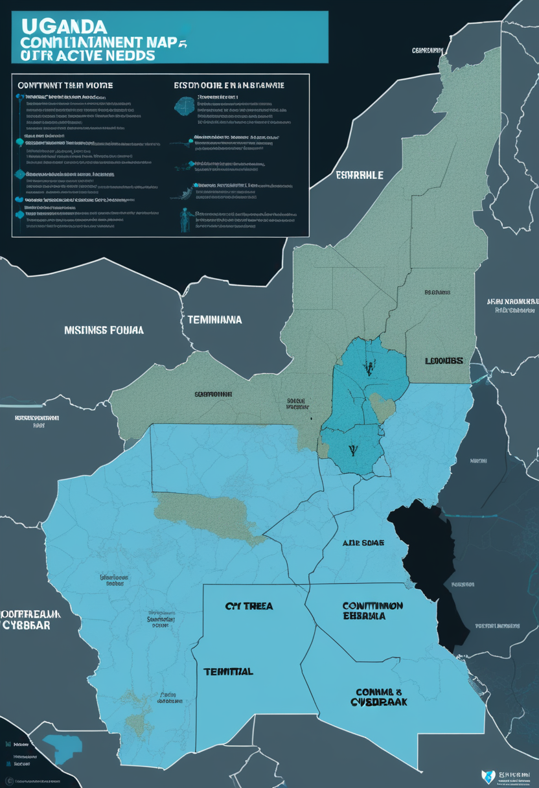
ウガンダでは2026年6月18日時点で14日間以上連続して新規エボラ症例の報告がない状態が続いている。WHOの終息宣言基準は「最後の感染者確認から42日間（最長潜伏期間の2倍）連続ゼロ」であり、まず21日間がひとつの節目となる。迅速な接触追跡・隔離・医療従事者訓練によって越境封じ込めに成功したモデル事例として国際社会から評価されており、DRC対応への教訓として注目される。対照的にDRCは866例で拡大中であり、「越境させない」封じ込めの成否の差が鮮明に表れている。ウガンダの成功は、同じ地域で同じ病原体に向き合いながら、適切な準備と迅速な対応がいかに結果を変えるかを示している。
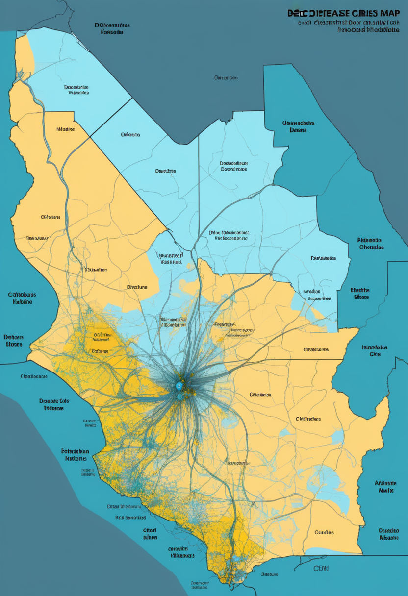
エボラPHEICが国際的注目を集める一方、DRCでは複数の感染症が大規模に同時進行している。WHO・Africa CDCの2026年6月時点の集計では、黄熱病51例・デング熱41,000例超・mpox 2,000例・コレラ26,750例が記録されており、エボラ対応に集中する国際リソースの陰で命の脅威が重なっている。コレラはUNICEFが「過去25年で最悪の流行」と位置づけており子どもへのリスクが最大とされる。mpoxは4月の国内緊急事態終了以降も2,000例程度のレベルが続いている。これらの複合危機は、単一疾患対応を超えた衛生インフラ・医療アクセス・ワクチン供給の包括的改善なくしては解決しないという構造的現実を示す。
DRCエボラは866例・200死者でPHEIC継続、ウガンダは14日間連続ゼロで終息の節目が視野に入り、黄熱・デング・mpox・コレラという複合危機がエボラの陰で続く ── 封じ込めの成功と危機の重なりが同時に存在する基盤の今週。
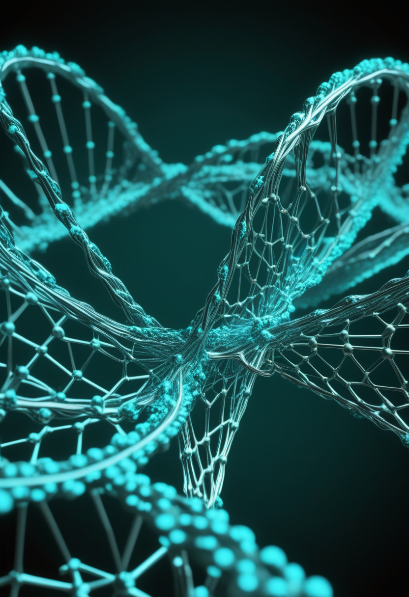
量子スピン液体（Quantum Spin Liquid, QSL）内に存在すると理論的に予測されていた「創発光子（emergent photon）」が、初めて分光実験で直接証明された。arXiv 2601.03202として公開されたこの成果は、量子スピン液体の基底状態に「光子のように振る舞う準粒子」が存在することを実験で実証し、半世紀以上にわたる理論予測の決定的確認となった。量子スピン液体とは電子スピンが絶対零度でも秩序化せず量子的に揺らぎ続けるエキゾチックな磁性状態で、位相的量子コンピュータの基盤材料候補として注目されている。「見えない量子の光が物質の中に存在する」ことが実証されたことで、量子コンピュータの誤り訂正に向けた新しい物質系の扉が開いた。量子の世界は、また一段、見えるようになった。
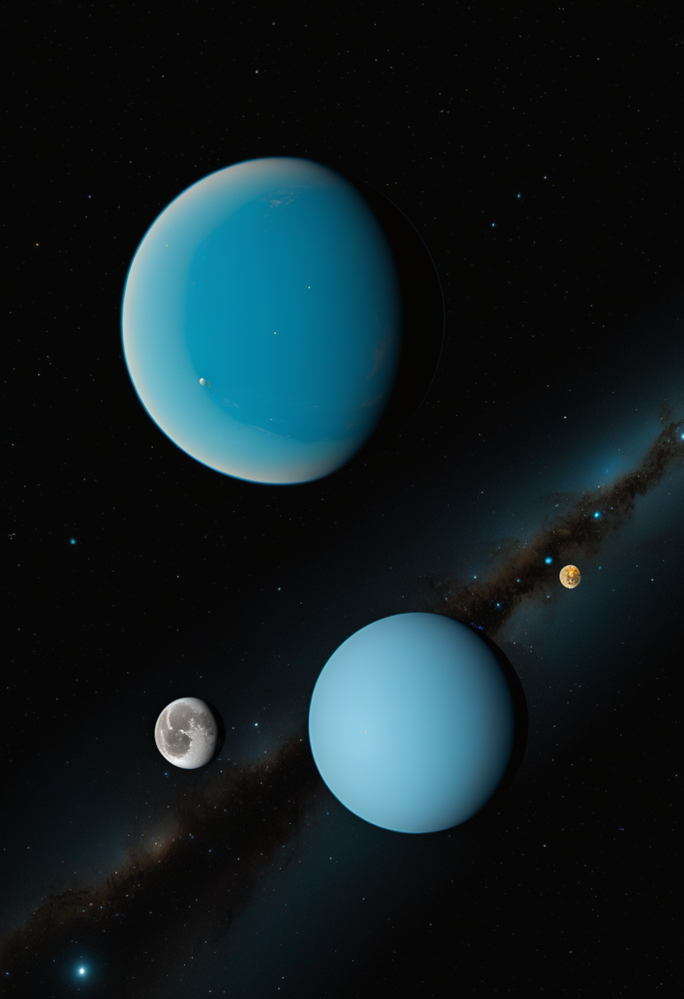
NASAナンシー・グレース・ローマン宇宙望遠鏡（2027年打ち上げ予定）が銀河バルジの重力マイクロレンズ調査で約10万個の系外惑星発見を予測する計画は、JWSTの精密大気分光とESA Euclidの広域宇宙マッピングと相補的に機能する三望遠鏡時代の幕開けを意味する。ESA Euclidは2026年6月24日に第2次データ公開（DR2）を予定しており、宇宙の大規模構造の精密な地図を提供する。「系外惑星が存在するか」という問いを答えた時代から「どれほど普遍的で多様に分布するか」という統計学の時代への移行が現実のものとなっている。三つの目が天空を分担して見ることで、宇宙の理解は一段階上がろうとしている。
2026年はUNESCOが定める「量子科学技術国際年（IYQ）」で、CERNは通年で量子技術の教育・研究・産業応用を推進している。6月だけでも量子スピン液体の創発光子初実証・オックスフォードの量子コンピュータ「シュレーディンガーの猫」新状態生成・JUNOのニュートリノ振動1.6倍精度測定（前週）と、「見えない量子現象の見える化」が連続した。量子通信・量子センサー・量子コンピュータの三フロンティアが同時前進する量子の年の後半は、基礎理論の確認から材料実証・計算実装への橋渡しが加速している。CERN量子国際年の2026年後半は、単なる周知活動を超えて実際の科学的成果が積み上がる年として記録されるだろう。
量子スピン液体の「創発光子」が50年越しの理論を実験で証明し、三大望遠鏡が系外惑星の統計学時代を準備し、CERN量子国際年の後半に量子成果が連鎖した ── 今週の科学は、見えない量子と見えない惑星の両方に手が届き始めた。
2026年3月にbioRxivで公開されたプレプリントは、720人・1,000時間超の機能的MRIデータを用いてAIモデルが個々の脳の刺激反応を高い精度で予測できることを示した。特定の映像・音・言語刺激に対して個人の視覚野・聴覚野・言語野がどのように活性化するかを、AIが大規模データから学習して予測できるようになってきた。これは「平均的な脳のマップ」から「あなたの脳のAI反応モデル」への移行を示しており、「個人差を記述できる」フェーズへの第一歩だ。Blindsightが視覚野を刺激して光を届けようとしているその隣で、AIが同じ視覚野の個人的な反応パターンを学習している ── 脳のデジタル化は両面から進んでいる。
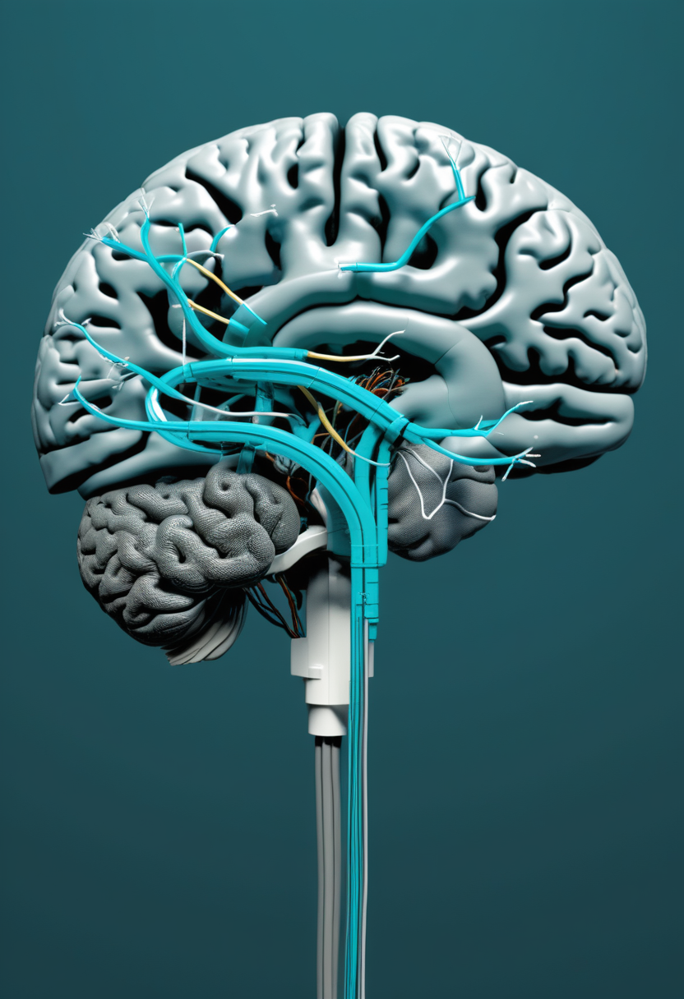
全脳のデジタルコピーという遠大な目標と並行して、「特定の脳回路だけをデジタル化する」部分シミュレーション路線が臨床応用への近道として注目を集めている。視覚野（Blindsight型アプローチ）・海馬（DARPA記憶プロステシス研究）・運動皮質（Neuralink N1チップ）という機能特定が容易な回路を対象に、損傷部位の機能をデジタルプロテーゼで補完するアプローチだ。全脳シミュレーションが「まだ遠縁の双子」の段階にある一方、機能回路単位のデジタル化はすでに人体試験の段階に達している。「全部は不可能でも、要の回路だけなら今できる」という部分的実用化が、2026年の脳科学の現実的地平だ。
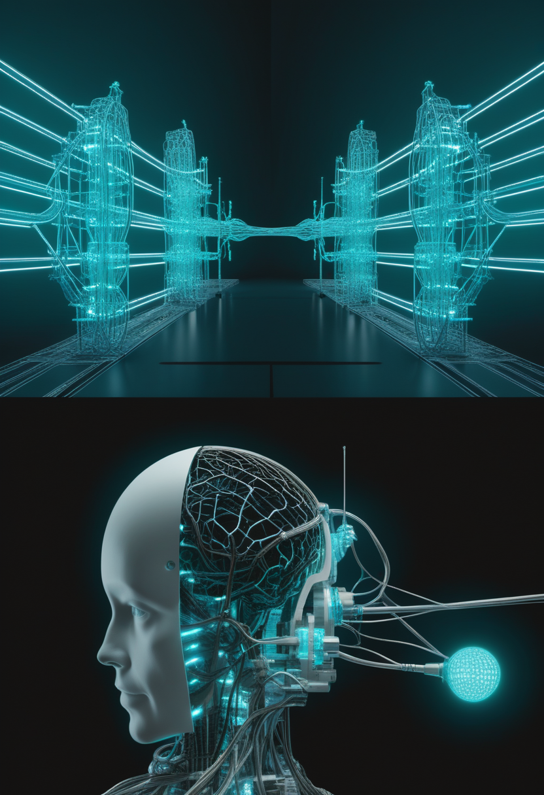
脳部分シミュレーションが実用域に近づくほど、「では意識はどうなるのか」という哲学的問いが具体的な形を帯びてくる。神経科学者の多数は2026年時点でも「ヒト意識の完全デジタル複製は不可能」とするが、理由として「意識のハード問題──なぜ脳の物理過程が主観的体験を生むのか──は測定も再現も不可能かもしれない」という不可知論的立場が広がっている。一方「特定の行動パターンや記憶パターンをデジタルに保存・復元する」という緩やかなデジタル化は着実に前進している。720人のfMRIがAIに個人の脳反応を教え、部分回路が視覚・記憶・運動を補完し、それでも「あなたの意識がそこにあるのか」という問いは問いのまま残る ── 壮大な不確実性を抱えたまま、人類のデジタル化は動いている。
720人のfMRIからAIが個人の脳反応を学習し、部分シミュレーションが視覚野・海馬・運動回路で臨床域に達し、それでも意識のハード問題は問いのまま残る ── 人間のデジタル化は壮大な夢と地に足のついた現実の間を歩き続けている。
今日の世界は、Blindsightが「完全失明に光を返す」初の人体試験を宣言した金曜日だった。NeuralinkはN1チップから視覚野へと広がり、Tobiiがウェブカムだけで視線追跡を実現し、人間とデジタルの境界がまた一段薄くなった。DRCエボラは866例・200死者となり、ウガンダは14日間連続ゼロで終息宣言の節目が視野に入り、黄熱・デング・mpox・コレラという複合危機がエボラの陰で続いている。高用量ヌシネルセンの承認でSMAの治療選択肢が広がり、アピテグロマブは早期治療効果の証拠を積み、日本では新生児スクリーニング全国化が動き始めた。量子スピン液体の中に「創発光子」が実証され、三つの巨大望遠鏡が系外惑星の統計学時代を準備し、720人のfMRIがAIに個人の脳反応を教え始めた。
金曜日の便り。見えなかった光が届き始めた日、世界はまた少し前に動いていました。おやすみなさい。